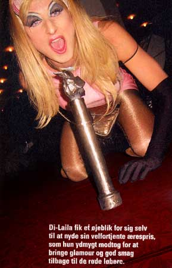
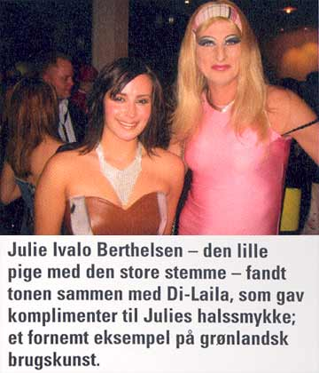
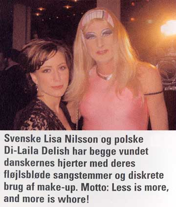
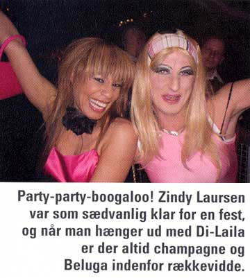
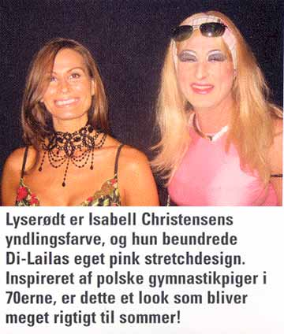
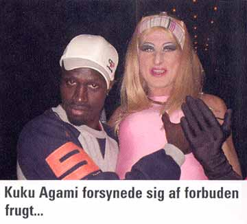
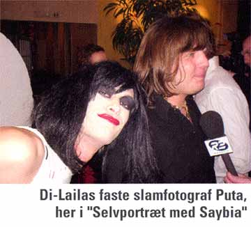

DI-LAILAS MUSIC AWARD  |
||
| Stjernereporter Di-Laila Delish er efterhånden mere kendt end
de kendte. Med det resultat, at hun ikke kan gå i fred på
gaden. Ikke engang til celebre musikarrangementer er der pusterum at få.
De såkaldte "kendisser" flokkes om hende og står i
endeløs kø for at foreviges sammen med divaen.
|
||
|       Print denne side |